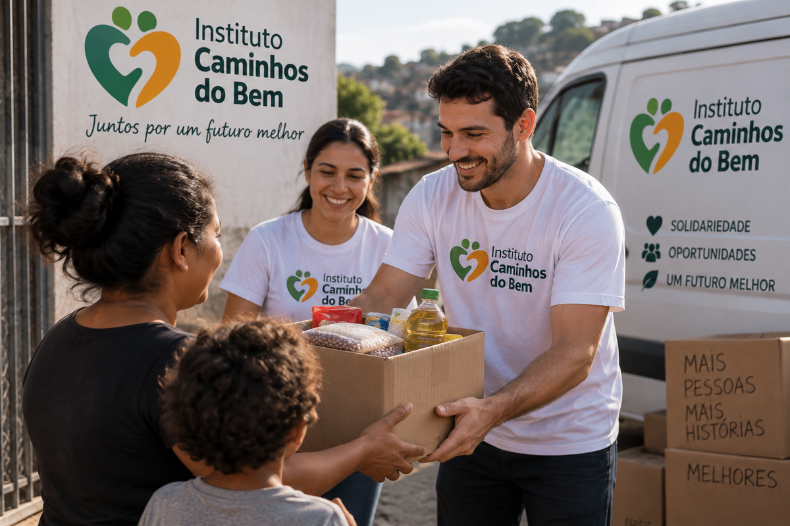

Doações
Apoio contínuoRecebemos contribuições para apoiar as campanhas sociais.

O Instituto Caminhos do Bem é uma ONG voltada ao apoio de pessoas e famílias em situação de vulnerabilidade.
Nosso trabalho é realizado por meio de campanhas de doação, ações sociais e atividades voluntárias.
Promover apoio social e contribuir para melhorar a qualidade de vida de pessoas e famílias que precisam de ajuda.
Realizamos arrecadação de alimentos e roupas, campanhas solidárias, apoio a famílias em situação de vulnerabilidade e ações com voluntários.

Recebemos contribuições para apoiar as campanhas sociais.

Voluntários ajudam na organização e execução das ações.

Arrecadamos alimentos não perecíveis para famílias atendidas.

Campanhas recebem roupas, calçados e cobertores em bom estado.
Telefone: (11) 99999-9999
E-mail: contato@caminhosdobem.org
Localização: São Bernardo do Campo - SP